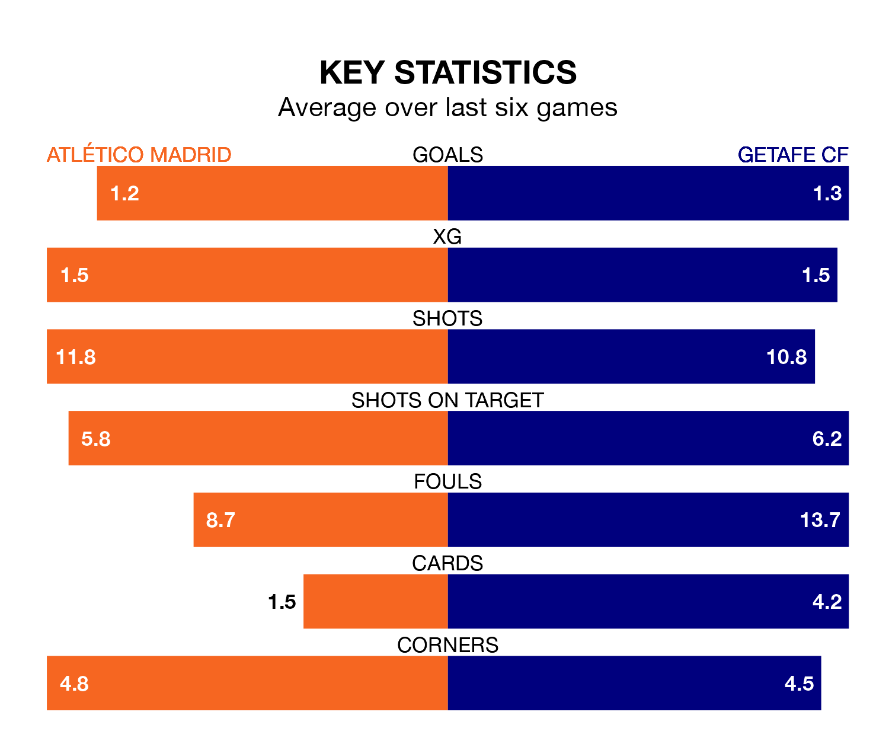

Atlético Madrid host Getafe CF in Tuesday's late match at the Estádio Cívitas Metropolitano looking to bounce back from defeat last time out in La Liga.
Atlético Madrid, who sit fourth in the league after 16 games, fell to a 2-0 away defeat to Athletic Club Bilbao on Saturday.
They face a Getafe side who picked up a win in their last match, a 3-0 victory against Sevilla, and who sit ninth in the table.
In David Soria, Getafe can rely on one of the league's safest pair of hands. He has kept seven clean sheets in his 17 appearances this season, and no 'keeper has prevented the opposition scoring more often in La Liga.
In Atlético's net, Jan Oblak has five clean sheets in 16 games.
With 32 goals in 16 games so far this season, Atlético Madrid are scoring more than average in the league with 2.0 goals per game. And they are conceding fewer than average, letting in 16 goals at a rate of 1.0 per game.
Getafe CF, meanwhile, are below average scorers, with 1.2 goals per game, compared to a league average of 1.3. They have also conceded 1.2 goals per game.
In the last 10 years, Atlético and Getafe have played each other on 17 occasions. Atlético won 15 of them and they drew twice.
On average, Atlético Madrid scored 1.7 goals and Getafe CF 0.3 in those matches.
Their last meeting was on February 4, when they played out a 1-1 draw.
The home team are in mixed form in La Liga, with three wins and three losses from their last six games.
With four wins and a draw over that period, the visitors' form is better – they have taken 13 points from 18, compared to Atlético's nine.
